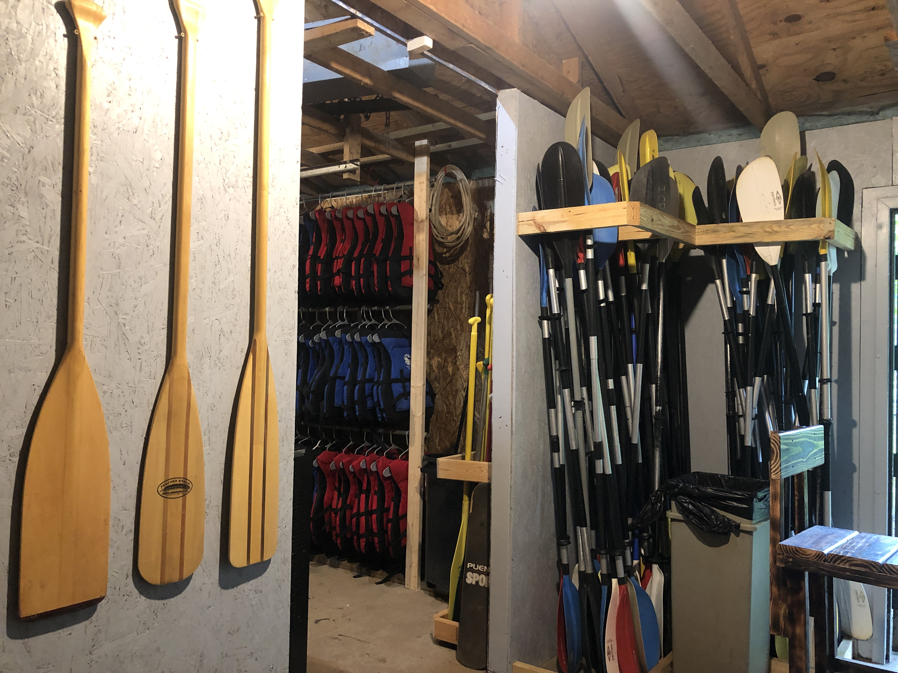
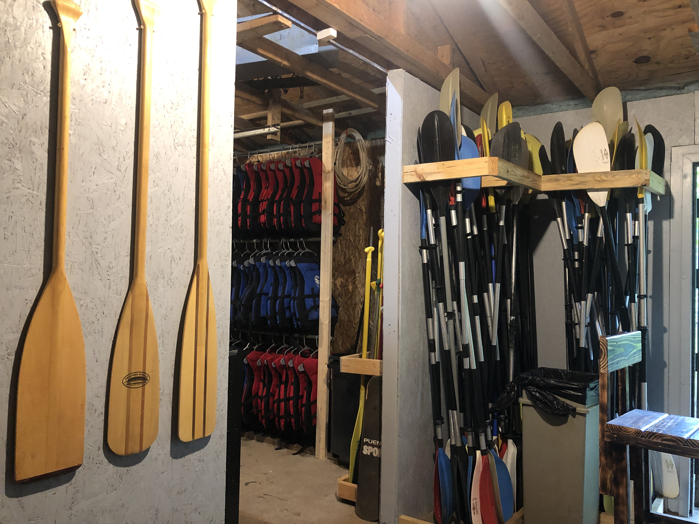

Burchfield Park

Management Intern - Summer 2020
I am current in the process of designing interpretative signage for Burchfield County Park in Holt, Mi. Ask me about it or check back in a couple month for the progress. I was also the Management intern here Summer 2020. Scroll down and I can tell you about all the great things I accomplished here.
 
